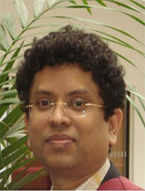
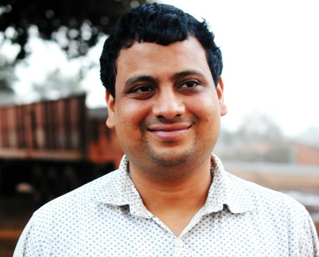

FACULTY OF COMPUTER SCIENCE DEPARTMENT
DR. SAMRAT MONDAL
DR. ARIJIT MONDAL
DR. ASIF IQBAL

DR. JIMSON MATHEW
DR. ABYAYANDA MAITI

DR. SOURAV DANDAPAT
DR. SRIPARNA SAHA
DR. JOYDEEP CHANDRA
 DR. ABYAYANDA MAITI
DR. ABYAYANDA MAITI
 DR. SRIPARNA SAHA
DR. SRIPARNA SAHA